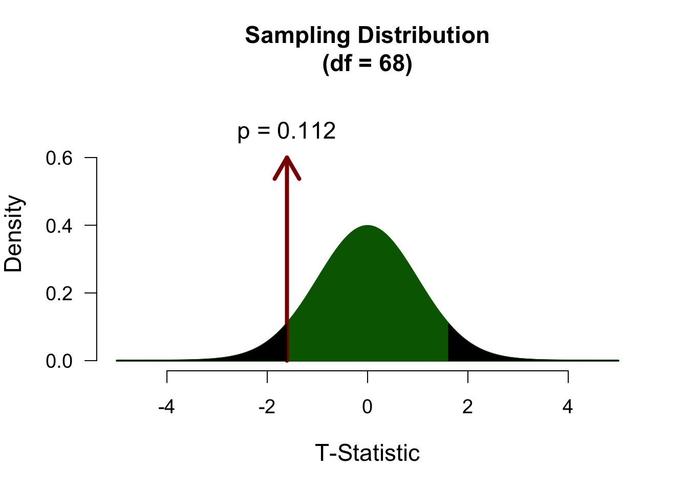
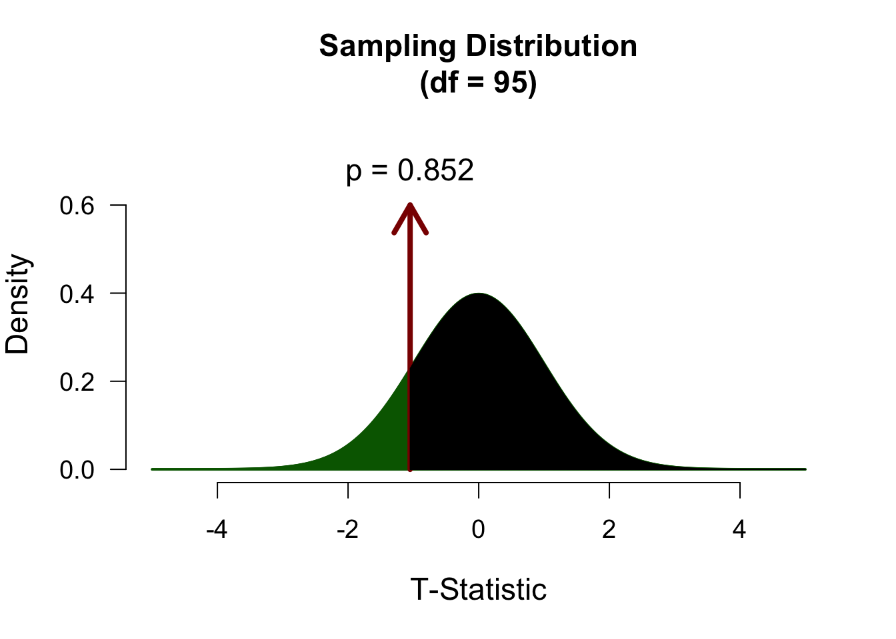
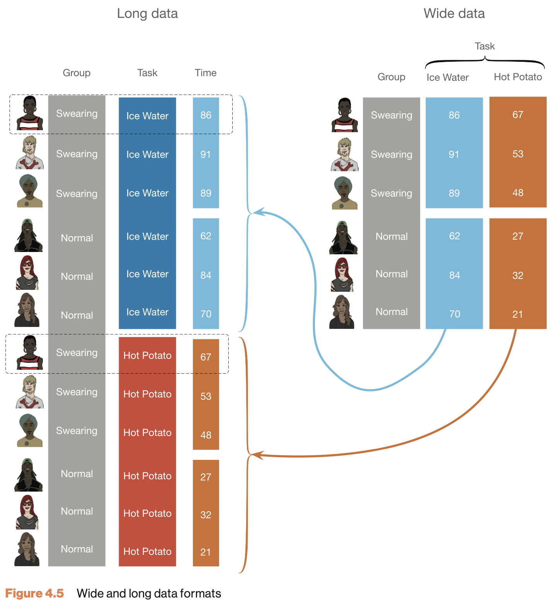
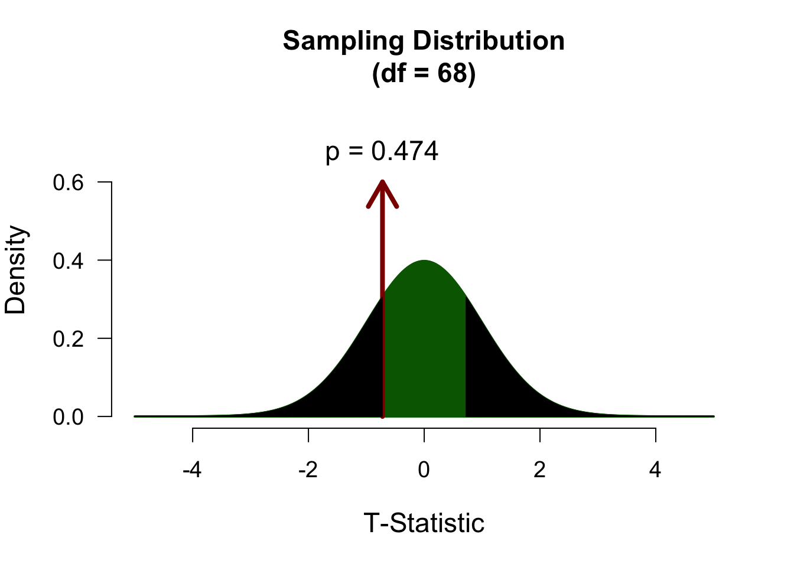

mu <- 120
n <- length(IQ.next.to.you)
x <- IQ.next.to.you
mean_x <- mean(x, na.rm = TRUE)
sd_x <- sd(x, na.rm = TRUE)
cbind(n, mean_x, sd_x) n mean_x sd_x
[1,] 96 117.8854 19.73288In this lecture we aim to:
Reading: Chapter 9
Compare 1 group mean to a hypothesized value
\[\text{outcome} = \text{model} + \text{error}\]
\(\mathcal{H}_0: \text{model} = 120\)
\(\mathcal{H}_A: \text{model} = \bar{x}\)
Can you phrase research questions that would lead you to each of these three versions of \(\mathcal{H}_A\)?
We use the one-sample t-test to compare the sample mean \(\bar{x}\) to the mean that is hypothesized by \(\mathcal{H}_0\): \(\mu = 120\). Let’s take a look at our sample:
mu <- 120
n <- length(IQ.next.to.you)
x <- IQ.next.to.you
mean_x <- mean(x, na.rm = TRUE)
sd_x <- sd(x, na.rm = TRUE)
cbind(n, mean_x, sd_x) n mean_x sd_x
[1,] 96 117.8854 19.73288Does this mean differ significantly from \(\mathcal{H}_0:\) \(\mu = 120\)?
\[T_{n-1} = \frac{\bar{x}-\mu}{SE_x} = \frac{\bar{x}-\mu}{s_x / \sqrt{n}} = \frac{117.89 - 120 }{19.73 / \sqrt{96}}\]
So the t-statistic represents the deviation of the sample mean \(\bar{x}\) from the population mean \(\mu\), considering the sample size.
tStat <- (mean_x - mu) / (sd_x / sqrt(n)); tStat[1] -1.049953To determine if this t-value significantly differs from the population mean we have to specify a type I error that we are willing to make.
Finally we have to calculate our \(p\)-value for which we need the degrees of freedom \(df = n - 1\) to determine the shape of the t-distribution.
\[ \mathcal{H}_A: \mu \neq 120 \rightarrow t \neq 0 \]

\[ \mathcal{H}_A: \mu > 120 \rightarrow t > 0 \]

\[ \mathcal{H}_A: \mu < 120 \rightarrow t < 0 \]
\[d = \frac{t}{\sqrt{n}}\]
d <- tStat / sqrt(n)
d[1] -0.1071604Compare 2 dependent/paired group means
In the Paired samples t-test the deviation (\(D\)) for each pair is calculated and the mean of these deviations (\(\bar{D}\)) is tested against the null hypothesis where \(\mu = 0\).
\[t_{n-1} = \frac{\bar{D} - \mu}{ {SE}_D }\] Where \(n\) (the number of cases) minus \(1\), are the degrees of freedom \(df = n - 1\) and \(SE_D\) is the standard error of \(D\), defined as \(s_D/\sqrt{n}\).
\[\LARGE{ \begin{aligned} H_0 &: \bar{D} = \mu_D \\ H_A &: \bar{D} \neq \mu_D \\ H_A &: \bar{D} > \mu_D \\ H_A &: \bar{D} < \mu_D \\ \end{aligned}}\]
| index | k1 | k2 |
|---|---|---|
| 1 | x | x |
| 2 | x | x |
| 3 | x | x |
| 4 | x | x |
Where \(k\) is the level of the categorical predictor variable and \(x\) is the value of the outcome/dependent variable.

We are going to use the IQ estimates we collected. You had to guess your neighbor’s IQ and your own IQ.
Let’s take a look at the data.
diffScores <- IQ.next.to.you - IQ.youdiffScores <- na.omit(diffScores) # get rid of all missing values
diffMean <- mean(diffScores)
diffMean[1] -2.395833And we also need n.
n <- length(diffScores)
n[1] 96\[t_{n-1} = \frac{\bar{D} - \mu}{ {SE}_D }\]
mu <- 0 # Define mu
diffSD <- sd(diffScores) # Calculate standard deviation
diffSE <- diffSD / sqrt(n) # Calculate standard error
df <- n - 1 # Calculate degrees of freedom
# Calculate t
tStat <- ( diffMean - mu ) / diffSE
tStat[1] -0.8280205\[ \mathcal{H}_A: \mu_D \neq 0 \rightarrow t \neq 0 \]

\[d = \frac{t}{\sqrt{n}}\]
d <- tStat/(sqrt(n))
d[1] -0.08450949Compare 2 independent group means
In the independent-samples t-test the mean of both independent samples is calculated and the difference of these \((\bar{X}_1 - \bar{X}_2)\) means is tested against the null hypothesis where \(\mu = 0\).
\[t_{n_1 + n_2 -2} = \frac{(\bar{X}_1 - \bar{X}_2) - \mu}{{SE}_p}\] Where \(n_1\) and \(n_2\) are the number of cases in each group and \(SE_p\) is the pooled standard error.
| index | k | outcome |
|---|---|---|
| 1 | 1 | x |
| 2 | 1 | x |
| 3 | 2 | x |
| 4 | 2 | x |
Where \(k\) is the level of the categorical predictor variable and \(x\) is the value of the outcome/dependent variable.
Specific for independent sample \(t\)-test:
We are going to use the IQ estimates we collected. You had to guess the IQ of the one sitting next to you and your own IQ. Do your guesses differ from the guesses from last year??
iq2024.mean <- mean(iq2024, na.rm = TRUE)
iq2025.mean <- mean(iq2025, na.rm = TRUE)
rbind(iq2024.mean, iq2025.mean) [,1]
iq2024.mean 116.8841
iq2025.mean 117.8854iq2024.var <- var(iq2024, na.rm = TRUE)
iq2025.var <- var(iq2025, na.rm = TRUE)
print(rbind(iq2024.var, iq2025.var)) [,1]
iq2024.var 259.2805
iq2025.var 389.3867iq2024.n <- length(iq2024)
iq2025.n <- length(iq2025)
n <- iq2024.n + iq2025.n
print(rbind(iq2024.n, iq2025.n)) [,1]
iq2024.n 69
iq2025.n 96\[t_{n_1 + n_2 -2} = \frac{(\bar{X}_1 - \bar{X}_2) - \mu}{{SE}_p}\]
Where \({SE}_p\) is the pooled standard error.
\[{SE}_p = \sqrt{\frac{S^2_p}{n_1}+\frac{S^2_p}{n_2}}\]
And \(S^2_p\) is the pooled variance.
\[S^2_p = \frac{(n_1-1)s^2_1+(n_2-1)s^2_2}{n_1+n_2-2}\]
Where \(s^2\) is the variance and \(n\) the sample size.
\[S^2_p = \frac{(n_1-1)s^2_1+(n_2-1)s^2_2}{n_1+n_2-2}\]
df <- iq2024.n + iq2025.n - 2
pooledVar <- ( (iq2024.n-1)*iq2024.var + (iq2025.n-1)*iq2025.var ) / df
df[1] 163pooledVar[1] 335.1093\[ {SE}_p = \sqrt{\frac{S^2_p}{n_1}+\frac{S^2_p}{n_2}} \]
sePooled <- sqrt( ((pooledVar/iq2024.n) + (pooledVar/iq2025.n)) )
sePooled[1] 2.889183\[t_{n_1 + n_2 -2} = \frac{(\bar{X}_1 - \bar{X}_2) - \mu}{{SE}_p}\]
tStat <- ( iq2024.mean - iq2025.mean ) / sePooled
tStat[1] -0.3465889\[ \mathcal{H}_A: \mu_1 \neq \mu_2 \rightarrow t \neq 0 \]
\[d = \frac{2t}{\sqrt{n_1 + n_2}}\]
d <- 2*tStat / sqrt(n)
d[1] -0.05396382There exist different hypothesis tests for this - the most used is Levene’s test:
Levene's Test for Homogeneity of Variance (center = median)
Df F value Pr(>F)
group 1 0.0986 0.754
163 But more nuance lies in comparing observed sd’s or variances: ::: {.cell} ::: {.cell-output .cell-output-stdout}
2024 2025
16.10219 19.73288 ::: :::
Levene’s test (and other significance tests like it, such as Shapiro for normality) are heavily influenced by sample size, so a significant test result does not necessarily mean that you have a problem. A more pragmatic rule of thumb is to look at the ratio of variances - a ratio greater than 2 is problematic. Additionally, Welch \(t\)-test is a version of the \(t\)-test that is robust to unequal variances.
Unequal variances bias the sampling distribution of \(t\). Welch makes a correction:
\[SE_{\text{unpooled}} = \sqrt{\frac{s_1^2}{n_1} + \frac{s_2^2}{n_2}}\]

Assumption violations affect the shape of the sampling distribution and mess up the type 1/2 error rates